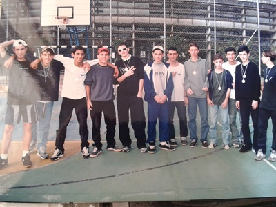
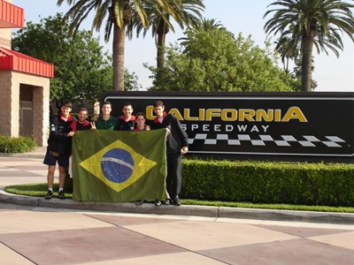
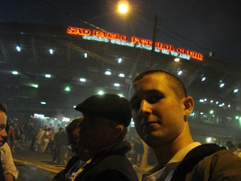
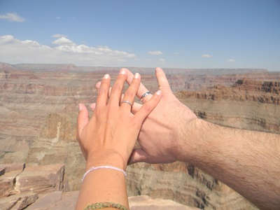
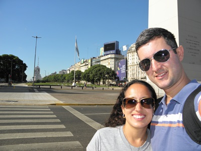
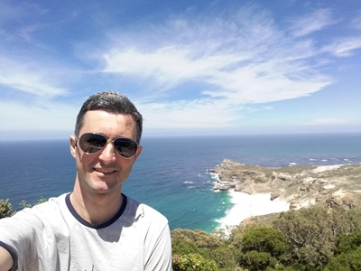
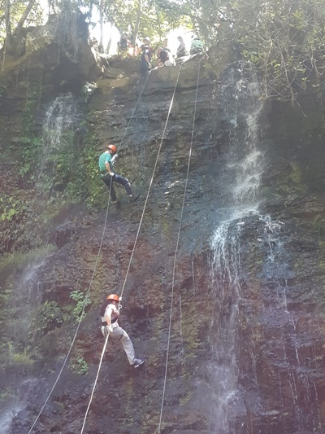
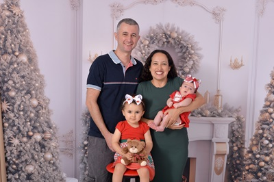
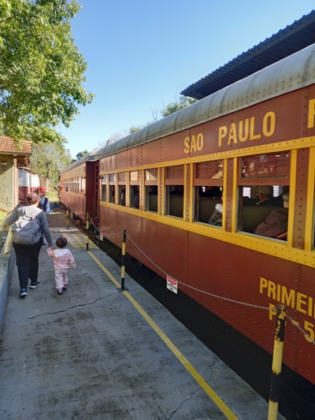

Indo e Vindo...
SENAI
Foi no SENAI que aprendi as primeiras etapas da vida profissional, o que me ajudou muito durante o processo de aprendizado. Olhe eu lá no canto direito da imagem, hehe!
Engenharia
A engenharia realmente pode ser uma experiência transformadora! Através de projetos práticos, você aprende a aplicar a teoria na vida real, o que amplia sua perspectiva e criatividade.
A faculdade me ajudou a alçar vôos nunca imaginados, como esta primeira viagem internacional para uma competição internacional de fórmula SAE.
SPFC - O Soberano
Depois de mais de 20 anos, tive a primeira oportunidade de assistir o tricolor em casa!
Dias de luta, dias de glória!
Depois de formado e já trabalhando, as oportunidades surgiram e as primeiras viagens saíram do papel.
Noivado!
A vida sempre nos surpreende de maneiras incríveis. Encontrar a pessoa dos seus sonhos pode realmente mudar tudo. Esse tipo de conexão traz uma nova perspectiva e muitas alegrias.
As viagens continuaram na versão 2.0.
Aqui eu até fiquei mais bonito!

2013!!! E o que dizer deste ano?
O início da família!
Próximo destino:
Buenos Aires é uma cidade fascinante, cheia de vida e história. A Avenida 9 de Julho abriga o famoso Obelisco, e o Teatro Colón é considerado um dos melhores teatros de ópera do mundo.
Contando uma nova história...
A partir de 2014, mudança de cidade, herdeiras e novas histórias! Que dias, meus amigos!
Africa do Sul: Cape Town é uma cidade portuária na costa sudoeste da África do Sul, em uma península ao pé da imponente Montanha da Mesa. Bondes sobem lentamente até o topo plano da montanha, que ostenta vistas panorâmicas da cidade, do agitado porto e dos barcos a caminho da ilha Robben, famosa prisão na qual Nelson Mandela foi encarcerado e que agora é um museu.
No Alto Vale do Itajaí, Ibirama é uma cidade pequena e tranquila com menos de 20 mil habitantes. Um dos fortes atrativos turísticos na cidade são as belezas naturais que propiciam a prática de turismo de aventura, como rapel.
Tesouros
Como descrever em palavras?

E o futuro?
Vamos indo e vindo...
